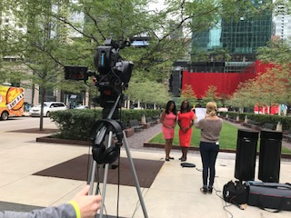

Victoria Cabales
journalist| developer| coffee enthusiast
About Me
I love to write and code, and I do both while consuming copious amounts of caffeine. I'd like to find a job that would combine my two passions, but in the meantime, I'm studying Journalism and Computer Science at Northwestern University.
I hope to work as a data journalist, discovering investigative stories through web scraping and creating interactive content through code. After an adventurous career (ideally filled with traveling to cool places around the world), I dream of opening a cute cafe that serves delicious coffee and has special stations for people to learn how to code.
If you'd like to support me and my dreams, feel free to contact me at victoriacabales2019@u.northwestern.edu.
Code
I'm passionate about finding ways to tell creative stories through code. Through my coursework at Northwestern, I've gained experience in interface design, virtual reality, and software engineering. I also plan on exploring computational photography and data visualization in the near future. Overall, my ideal career involves creating interactive and immersive journalistic experiences through online platforms.
Languages
HTML | CSS | JavaScript | C++ | Python | Matlab
Current Projects
SensorGrid
SensorGrid is Knight Lab's experimental DIY prototyping system for ad hoc sensor network deployment. Designed around Adafruit's Atmel-based Feather prototyping ecosystem, SensorGrid is modular, extensible, and open source all the way down to its core components. SensorGrid is designed to quickly and easily deploy a wireless network of environmental data collection. The primary use case is environmental data collection around a campus area for use by students and researchers for environmental data reporting classes and projects.View SensorGrid here.
SceneVR
SceneVR is a virtual reality tool that provides immersive journalistic experiences that can be embedded into online platforms without additional support. The tool renders 3D panoramas in sequential stories that are supported on desktop, mobile, and Google Cardboard. Collaborating with a four-person team through Northwestern University's Knight Lab, I helped design this product by drafting its interface on PhotoShop, researching ways to render text in 3D spaces, and gathering user feedback through testing. View SceneVR here.
WorkZone
WorkZone is a web app that tracks how much time a user wastes while studying. After the user manually inputs the sites that he or she finds unproductive, the app tracks these sites for a designated amount of time. After the time is up, the app displays a chart that represents the user's Internet activity, highlighting the time allotted to unproductive sites. Working with a four-person group for a Human Computer Interaction Class, I designed the general layout of our app. By doing so, I gained experience in using HTML, CSS, and JavaScript to design a one-page application. Although the class does not require us to implement its functionality, we hope to do so in the future. View here on Github. You can also view the implemented interface here.Relevant Courses
- Fundamentals of Computer Programming I & II
- Human Computer Interaction
- Engineering Analysis I
- Data Structures & Management
- Computational Photography
- Multimedia Reporting
Writing
I've reported on a variety of topics, ranging from immigration to education and LGBTQ rights. I'm passionate about writing stories on groups of marginalized people and understanding the difficulties that they face.
Winnebago County stands against ICE detention center in Rockford
“ICE already has been active in arresting and detaining people with no criminal record within the area, and people are talking about leaving,” Dady said. “If ICE is going to have a permanent presence in our jail or an extended presence, [undocumented immigrants] don’t want to run the risk of being asked for papers when they’re going to the grocery store.” Read the rest here.What are working conditions like for immigrants in the restaurant industry?
Picture what the city, almost any city, would look like if there were no restaurants. That’s what Latino grocery stores and restaurants hoped to convey when on May Day, 2017, many shut down in support of the thousands of people who protested in more than 40 cities against President Trump’s immigration policies. Read the rest here.
The Power of Mentoring
Loren Ayala has always been cognizant of the challenges posed by her identity as a low-income and first-generation student. While her parents did not have the opportunity to graduate from high school in Mexico, the Northwestern University Senior has succeeded in her pursuit of a dual degree in civil and environmental engineering. Her pride for these accomplishments is well-deserved. However, growing up, Ayala felt that she was hiding crucial parts of her identity. She realized the importance of her background after joining the peer mentorship program Compass. Read the rest here.
The Reactions of Asian Families When Their Children Come out as LGBT
As a conservative Southern Baptist minister, Pastor Danilo “Danny” Cortez never imagined that 60 percent of his congregation would one day leave his church due to his involvement with the LGBT community. Prior to becoming an LGBT activist to advance the rights of his gay son, the Filipino pastor firmly believed that homosexuality was a sin. Read the rest here.Selected pieces from The Daily Northwestern
Student bathroom bill introduced in Illinois House bases access on sex at birth
NBA Hall of Famer Kareem Abdul-Jabbar sells rug collection at Evanston store
District 65 board candidates discuss $4.5 million deficit, equity at education forum
Relevant Courses
- Reporting & Writing
- Multimedia Storytelling
- Journalism in Practice: Connecting with Immigrants, Refugees
- Writing on the Margins
Photography
Albums will redirect to Flickr.
Video
I spent the past summer working for Telemundo Chicago as a Commercial Production Intern. I learned that promo writing was hard, and writing commercial scripts in Spanish was even harder. But overall, I had a great time, and got to take home a little portfolio of Spanish commercials that I can call my own. Check out my work on Vimeo.
